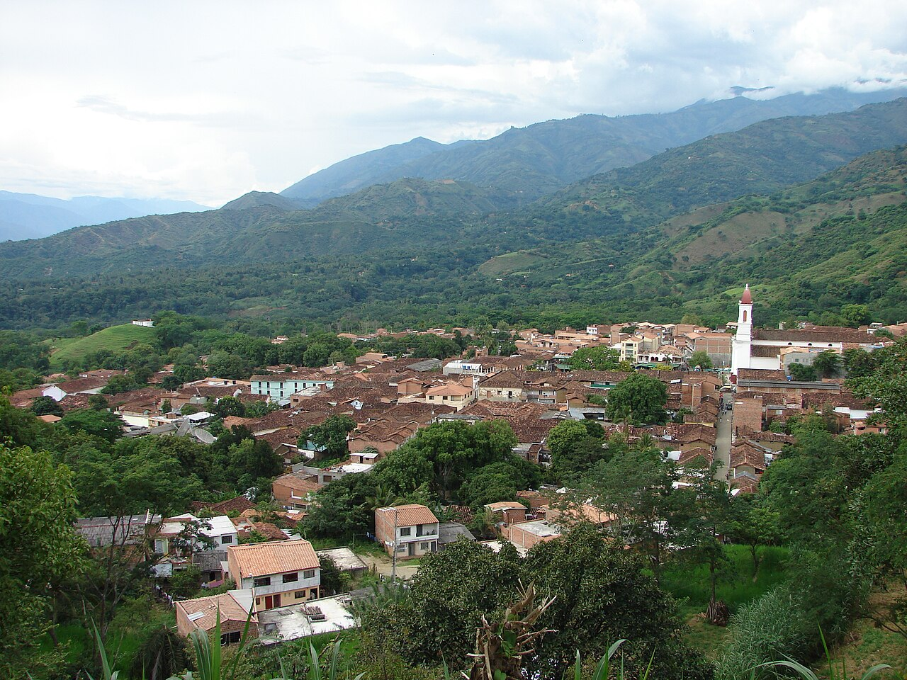
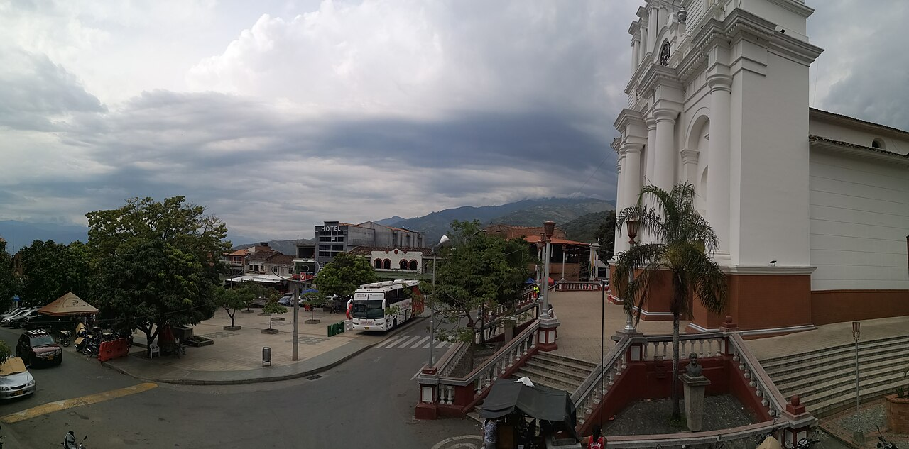

El Libertador Square
Discover the meeting place in the town centre.
Find on the map ↗West · Antioquia, Colombia
Discover a western town through its square and traditions.
What to see ↗Discover its history ↓
Do you have a business in Sopetrán? Leave your details to take part ↗
Discover the destination
Agriculture and religious devotion are part of Sopetrán’s heritage. Its history lives in the town centre and residents’ relationship with the warm lands of western Antioquia.

Ideas for your visit
Choose the places that spark your curiosity and plan your route at your own pace.
Discover the meeting place in the town centre.
Find on the map ↗Explore the town’s religious traditions.
Find on the map ↗Walk past facades and shops around the square.
Find on the map ↗Images resized; framing may vary by screen. Photographs licensed under CC BY-SA retain that license.
Connect the parts of your trip
Find how to get around, where to stay and eat, things to do and the services you need. Explore at your own pace.
There are no places published in this directory yet.
Locate the places you want to visit and check their opening hours, entry conditions and accessibility before planning your route.
Find Sopetrán on the map ↗There are no upcoming events published.
Organising an event? Let’s talk ↗Join Explorando Lugares
Be part of it.
Whether you run a hotel, restaurant, bar or shop, provide transport or organise tours and activities, we would like to hear about your business.
Leave your contact details. We will get in touch to discuss featuring your business on the portal.
I want to take part ↗